FoxESS on a phone
The three slides at phone sizes: what a phone gets now, and the layout proposals that led to it. The photographs are of the real dashboard with the real data pipeline — the demo, fed the longest values the display ever shows. The proposal photographs have a stylesheet injected at render time; the shipped ones are the page itself, with nothing added.
Open a photograph for the full size. These are the key ones; every candidate was photographed at three sizes, and the whole set is in this folder. The write-up, with the measurements and the risks, is in docs/MOBILE.md.
Shipped — what a phone gets now
Option A, as it ships
The battery ring and the live figures at the top, then the rest of the slide underneath, and the slide scrolls. The sideways swipe still turns the deck: the browser is given the vertical pan and keeps its hands off the horizontal one. The figures are 26 px rather than the LCD's 17 px, because a phone is read at arm's length.
These three photographs are of the shipped page — the real stylesheet, the real data pipeline, the longest values the display ever shows — with nothing injected at render time.
body 15 pxfigures 26 px diagram: noscrolls: yes swipe: yes
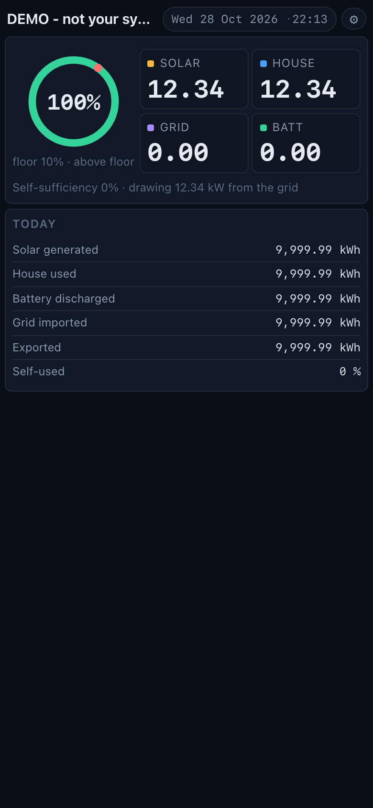
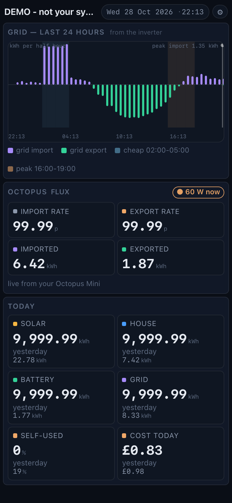
Before — what a phone used to get
The phone inherited the tiny-LCD layout
A phone is narrower than 560 px, so it fell through to the same breakpoint as a 3.5 inch LCD: the diagram is dropped, today's figures are dropped, and the five live numbers are left in a 3 + 2 grid with a great deal of empty screen around them. The type is the LCD's type — 13 px body, 17 px figures — on a screen that is held in a hand rather than screwed to a wall.
These three are kept as the record of what it was. They cannot be re-rendered from the current code, because the code that drew them has changed.
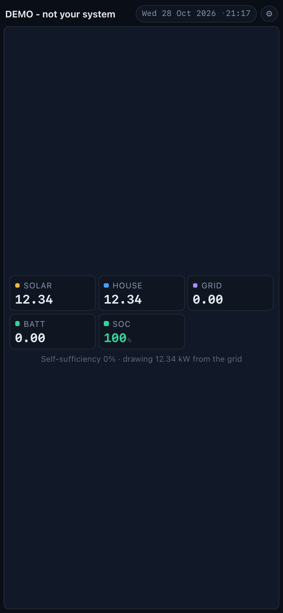
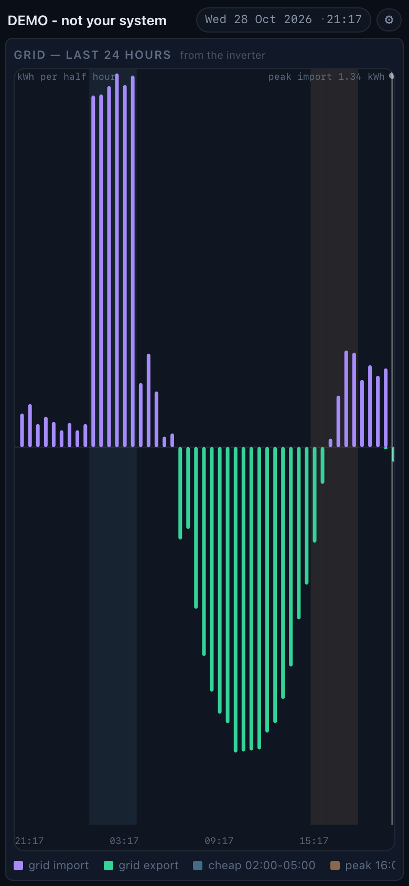
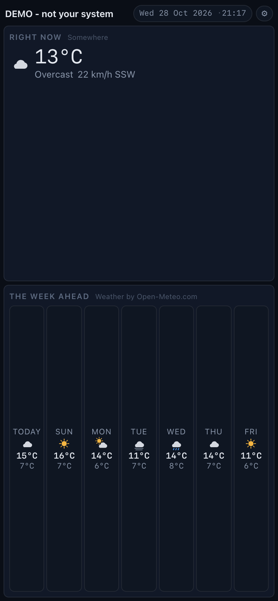
A — portrait, the numbers are the hero
A phone-native layout, and the page scrolls
The battery gauge beside the four live figures, today's figures as a
table underneath, and the slide keeps what it is for. The page scrolls,
because “one screen, no scrolling” is a rule for the fixed panels on a
wall and not for a phone in a hand. This is the option that touches
shared code: the root has to give up overflow:hidden and
touch-action:none, and a vertical drag has to be handed
back to the browser without the swipe that turns the deck being lost.
body 15 pxfigures 26 px diagram: noscrolls: yes
This is the option that was taken. The photographs below are the proposal as it was drawn; the shipped layout is at the top of this page, and it is the same idea with three things the mock-up could not show — the panels are a column rather than a grid, the tiles are two columns rather than six, and the chart legend wraps.
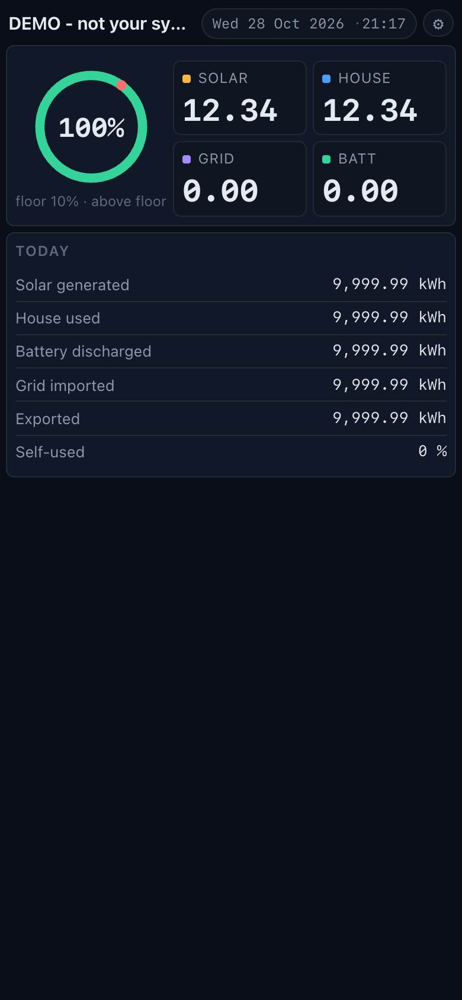
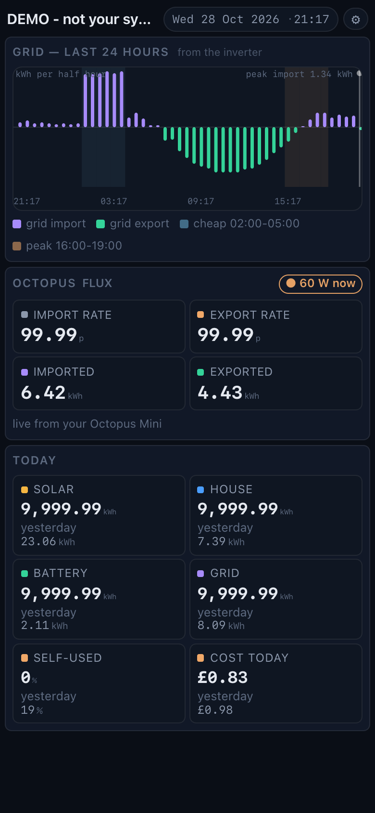
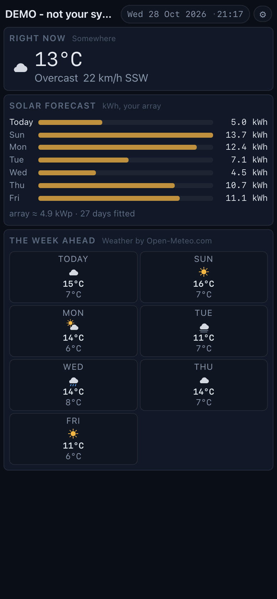
B — landscape, laid out like the Raspberry Pi
One new breakpoint, and nothing else changes
A phone in landscape is 844×390, very close to the Pi's 800×480. This option gives it the Pi's arrangement — the rings diagram across the top, the live figures and today's underneath — with the type a little smaller because the height is 390 rather than 480. The gesture code, the root overflow and the slide model are all left exactly as they are, which makes this the cheapest and the safest of the three.
body 14 pxfigures 22 px diagram: yes, 14 pxscrolls: no
The shipped work deliberately leaves landscape alone: the phone's media query asks for a narrow screen and a tall one, so a phone turned sideways still gets the old small-screen layout — the third photograph below, which is of the shipped page.
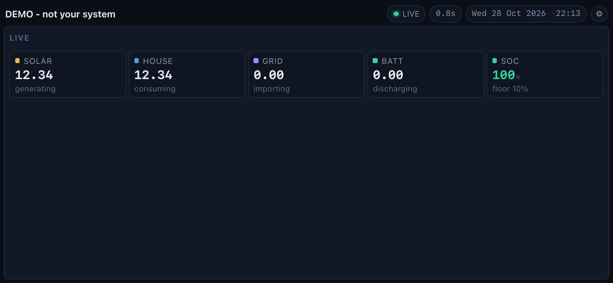
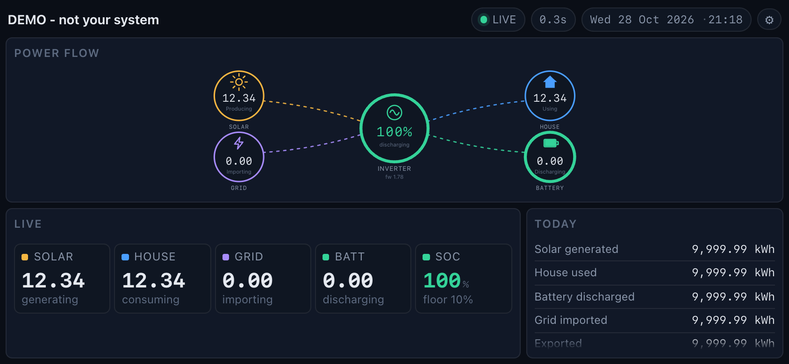
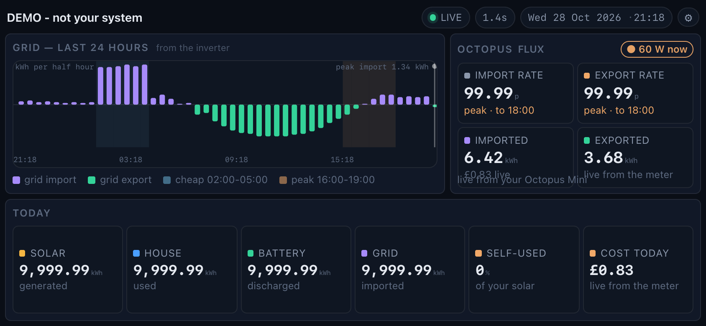
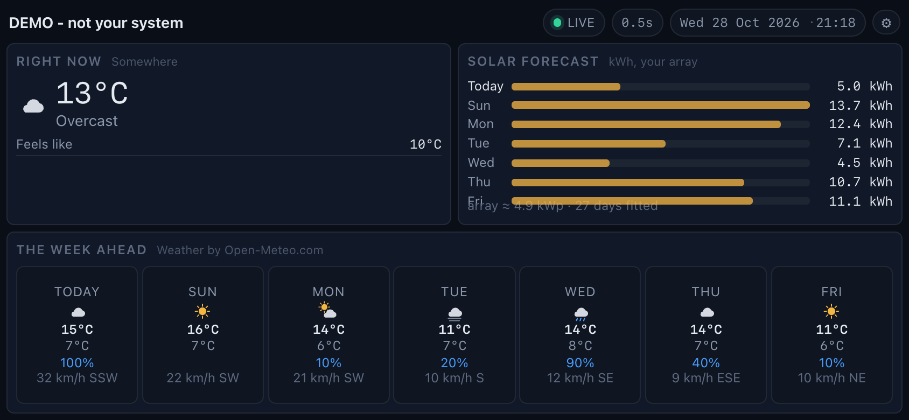
C — portrait, with the diagram kept
The diagram as a shape, not as a chart
The rings diagram stays, above the numbers. It reads at a glance — solar on the left, the house on the right, the hub in the middle — but its own numbers come out at about 12 px, because the diagram is a 900-unit-wide drawing scaled down to the width of the phone. Making it legible would mean drawing a second, portrait diagram: real work, and not mocked up here.
body 15 pxfigures 24 px diagram: yes, 12 pxscrolls: no
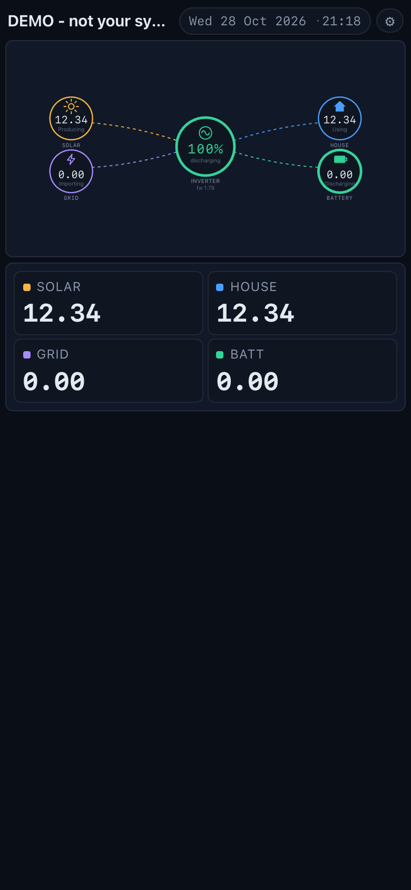
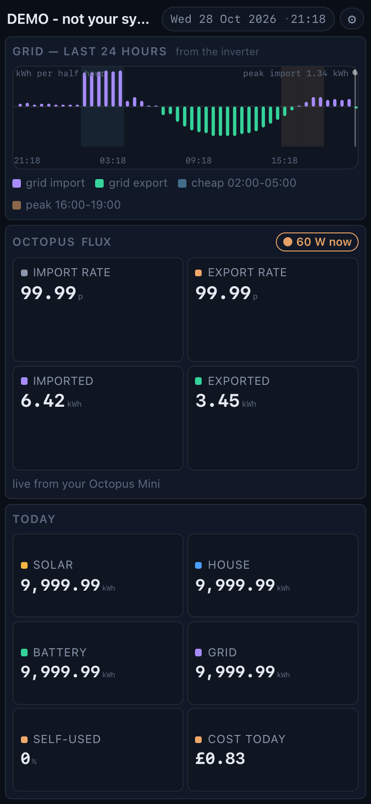
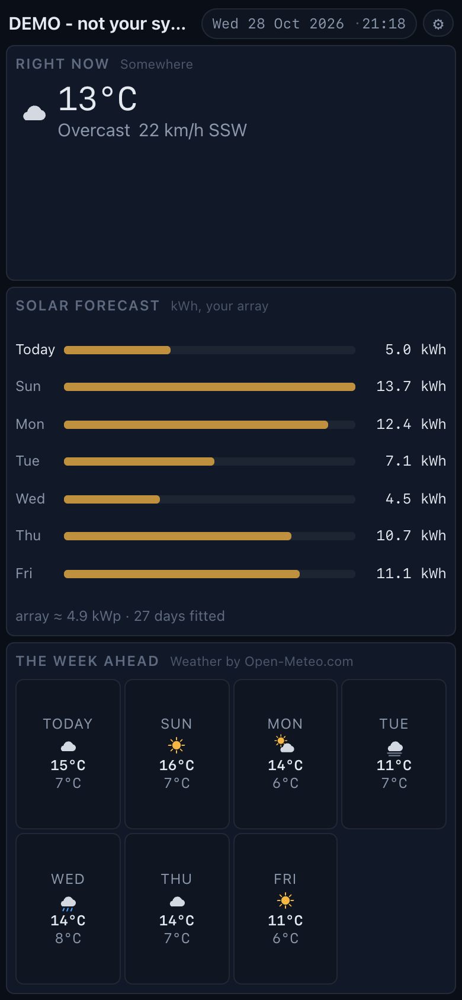
The settings page needs nothing
It already works on a phone
The settings page is a single column with large tap targets, a sticky action bar and no horizontal overflow, so it is already usable at 390 px. It is the one part of the dashboard that does not need designing for a phone.
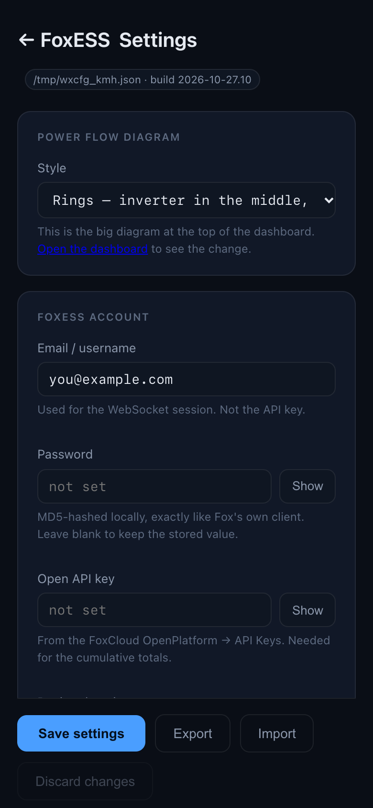